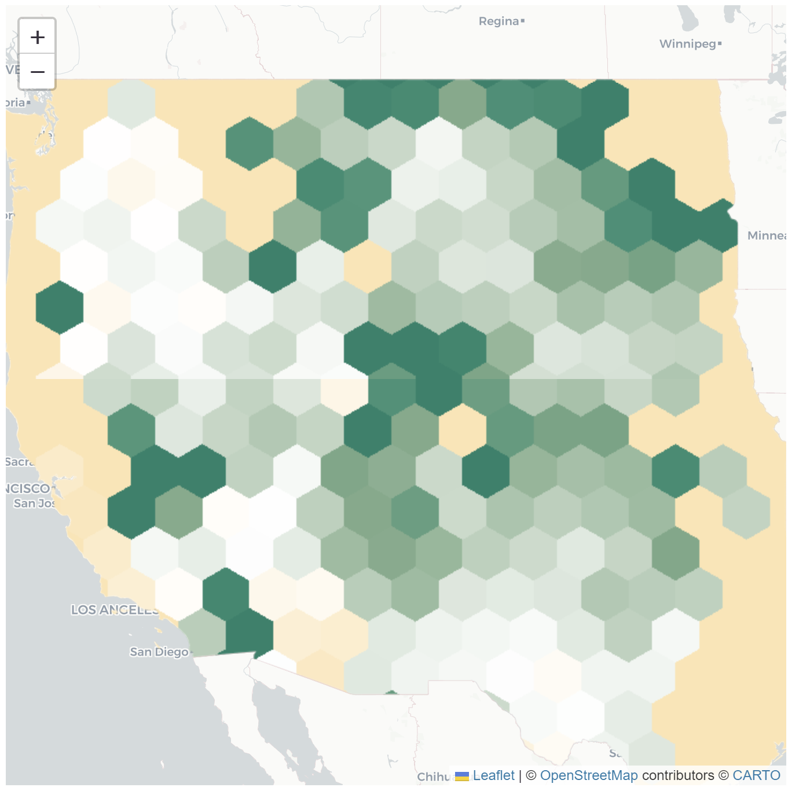
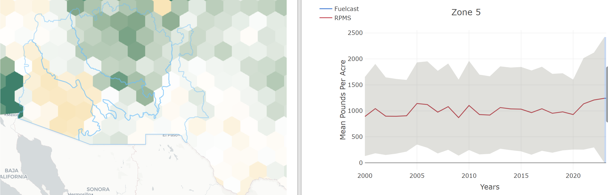

Fuelcast was a map-based resource that leveraged Google Earth Engine and Tensorflow to process near
real-time weather and remote sensing data, providing in season forecast estimates of the magnitude and timing of
annual production and fuel across coterminous U.S. rangelands. Users can access several cutting-edge information products,
with detailed reports in development. The tool provides free, near real-time information to rangeland managers, fire specialists,
and producers to act on in a timely manner.
Several government entities, such as: The US Forest Service, the National Park Service, and the Bureau of Land Management
What were my contributions?
While I provided a general purpose level of development to the project as a whole, there were several milestones I am proud of:
Using Google Earth Engine, I was able to restructure the pixel raster data of each data layer into a hexgrid layout that dynamically adjusted in size and mean depending on the zoom level of the map

I was able to use the geometry of the zonal geojsons that the data was associated with to create a dynamic highlighting system on the map that referenced each superzone's zonal statistics with the graphs on the right.

I successfully linked the load-balancer that handled the caching of large downloads from our GCP Cloud Storage back end to the user-facing UI, a much needed feature as raster data can get quite large.